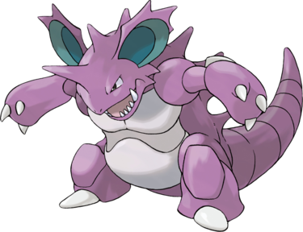

Nidoking est un Pokémon bipède à l'allure bestiale. Son corps cuirassé est principalement violet et sa partie pectorale est gris blanc. Il dispose d'une grosse corne empoisonnée sur le front ainsi que de plusieurs excroissances pointues longeant son dos. Ses oreilles possèdent des pics et l'intérieur est bleu canard.